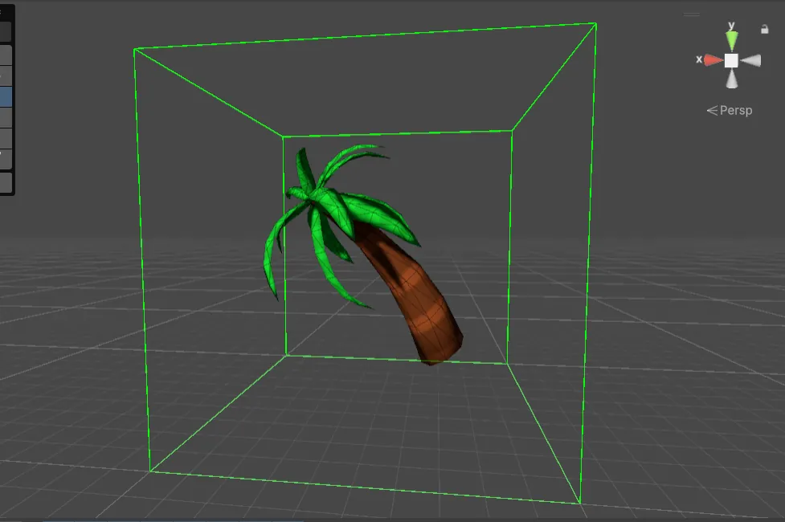
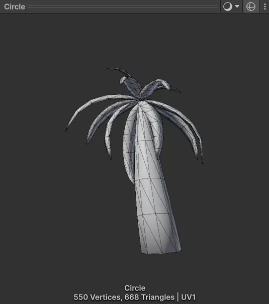
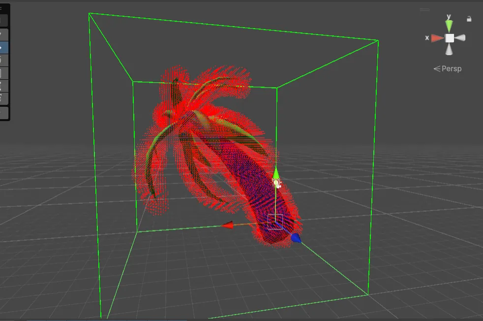
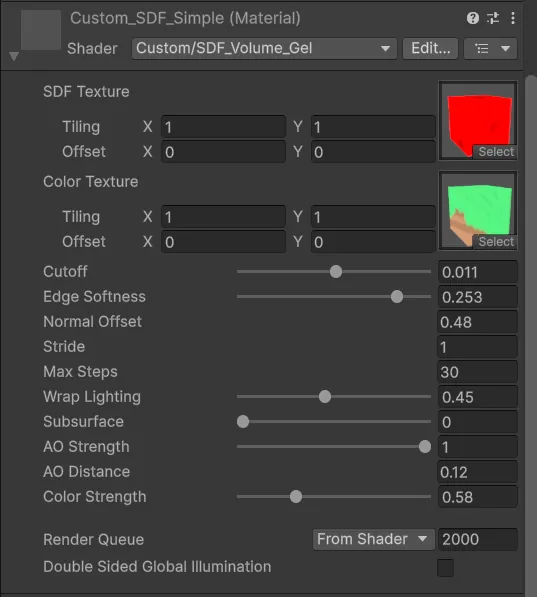
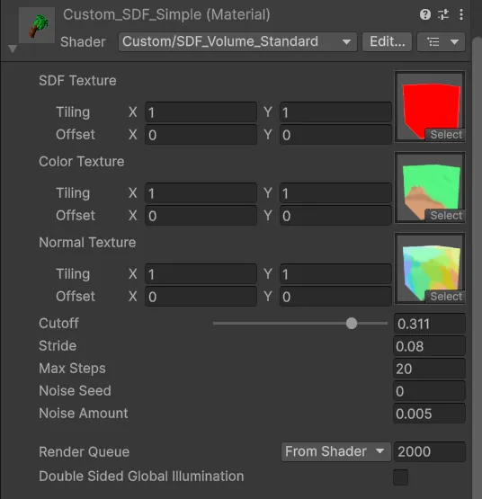
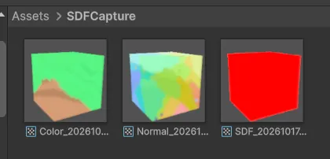

This one started as a thought rather than a task. I'd been playing with ray-marching shaders, where everything on screen is described by maths instead of triangles, and I kept coming back to the same question: what if the shape didn't come from a formula at all? Could I take an ordinary mesh, a little palm tree in my case, turn it into a signed distance field, and then draw it with a ray marcher like any other SDF?
A quick word on the two ideas, because the rest of the post leans on them. A signed distance field stores, for any point in space, how far that point is from the nearest surface: positive outside, negative inside, zero right on the skin. Ray marching uses that number to walk a ray through the scene. At each step the field tells you how far you can safely jump without hitting anything, so the ray takes big strides through empty space and small careful ones near the surface, until it lands on it. Spheres and boxes have neat formulas for this. A palm tree doesn't, so I had to build the field myself.
Brute force first
I started with the simplest thing that could possibly work. The tool puts a box around the mesh, splits that box into a grid of cells, and for each cell measures the distance from its centre to every single triangle in the mesh, keeping the smallest. It isn't clever, but for a small mesh it's honest and easy to trust.

The tree is tiny by game standards. The tool pulled 668 triangles out of it, which matched the mesh preview exactly: 550 vertices and 668 triangles. Seeing those two numbers agree was a small but satisfying moment, because it meant I was reading the whole mesh and not missing a sub-mesh somewhere.

To see whether the distances made sense, I drew a debug point in every cell that came out close to the surface. When the red points wrapped the trunk and traced every leaf, I knew the maths was right, and I could move on to actually drawing something.

The first texture didn't work
The shader needs to read the field, so the obvious next step was to write the distances into a texture and sample them back on the GPU. My first attempt didn't go to plan. Instead of a palm tree, I got stacked purple slices floating in the box. Somewhere between writing the data and reading it back, the shape got lost, and it took some untangling before the two sides agreed.
Smooth normals and light
Once the reading and writing lined up, the tree appeared. Lighting a ray-marched shape needs a surface normal, and you get it from the field itself: sample the distance a tiny step away in each direction and see which way it grows. Done naively on a grid, that looks blocky, because each sample snaps to one cell. So I blended the eight surrounding cells with trilinear interpolation, which turns the stepped grid into a smooth slope. With smooth normals in place, simple lighting finally made it look like a solid object.
Colour came next. Alongside the distance, I stored the mesh's colour in each cell and blended it with the same trilinear maths, so the brown trunk fades into the green leaves instead of switching in hard blocks.
How far can I push it?
With everything working, I wanted to know how cheap the shader could get. I stripped it back hard, cutting out work to see what survived. The result is recognisably the tree, but it turns into chunky blocks. It was a useful lesson in where the quality actually comes from: the smooth blending isn't a luxury, it's what makes a coarse grid look like a real shape.
I also took a detour just for fun. I tried to make the volume look like a thermal camera image, with the tree glowing through the box in hot purples and yellows. It wasn't the goal, but it's a nice reminder that a distance field holds a lot more than a surface.
Letting the hardware do the blending
The big step forward was switching to 3D textures. Up to then, I'd been doing the trilinear blending myself in the shader. A 3D texture gives you that for free: the GPU's own filtering blends between neighbouring texels in all three directions in hardware. So the generator now saves the field straight into a 3D texture, and the shader simply samples it. Less code, less maths per step, and smoother results.
That also made it easy to experiment with the look. One material is a soft, gel-like version with controls for the surface cutoff, edge softness, how far to offset the normal samples, the step size and number of steps, wrap lighting, a touch of subsurface, and ambient occlusion.

Three small textures per object
The final setup bakes three 3D textures for each object: the distance field, the colour and the normals. Baking the normals means the shader no longer has to work them out every frame, so the standard material is lean, with just a cutoff, the step size, a maximum step count and a little noise to break up banding.

What surprised me most was how little memory it all takes. Each of the three textures is about 31 KB, so a whole object comes in under 100 KB.

A small forest
The real test was putting lots of them in a scene. Each tree is just a box with the material on it, so I can move, rotate and scale every copy on its own, and they all render without any trouble. Watching a little grove of ray-marched palm trees that started life as an ordinary mesh was the moment the idea felt real.
What I like about this approach is how it bridges two worlds: artists keep working with normal meshes, and the shader gets a compact field it can march through, blend, soften or light however it likes. There's a lot more to try from here, but turning a palm tree into a few tiny textures and getting it back on screen was a satisfying place to start.